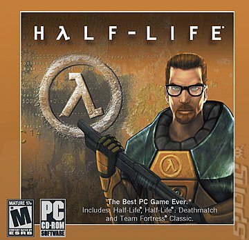
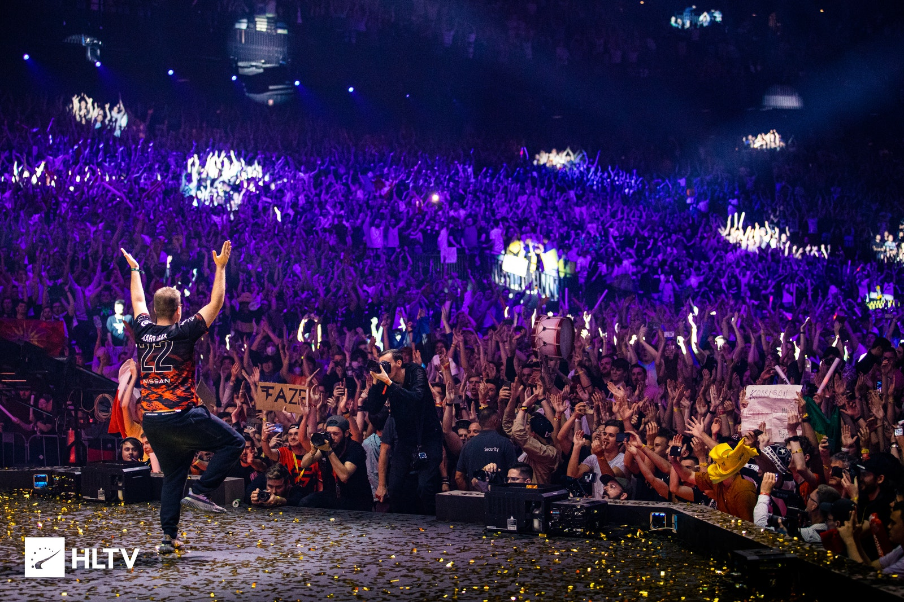

A loyal fan of the Counter-Strike series since it is inception way back in the end of the 90s, Year 1999 to be exact. I bought a bootleg Half-Life CD with its MODS for PHP 100 in a mall in Ortigas. I do hope that stall is still open up to this day.
I have been completely addicted to this game. I finished the single player mission as Gordon Freeman, the crowbar-weilding theoretical physicist fighting the invading Zen Aliens. It was such a memorable adventure, I still fear those headcrabs devouring the scientist's head scene. *shivers*
Through my High School years, I have been playing Counter-Strike in local LAN shops, dominating the competition. Me and my classmates formed a team consisting of 5 players to fight against the other section's 5 players. The result was dominating, We won landslide and that cemented my passion for the game.
 A similar Half-Life CDROM I bought wayback in 1999.The Internet Era of Counter-Strike
As technology progress, the gaming scene also creeps along with it. The people filled LAN shops before in early 2000 to 2007 are just memories of the good past. The era of Internet gaming has begun and we have to embrace the changes in the society and also in the gaming scene.
There can be no doubt that the way of gaming in the past decade revolves through the internet and game vendor companies such as Steam, Epic Games etc. It made our life easier and convinient. As gaming goes, it was really fun and interactive, we can do voice comms easily without hassle and you can play anytime and anywhere.
“The waves of changes propel advancement.” ― Zoltan Andrejkovics, The Invisible Game: The Mindset of a Winning Team
The Grand Event Experience
As a Counter-Strike fan, watching the Major event yearly is a must. A road to Mecca perhaps if you put it nicely. Recently I witnessed the most active crowd through the game's livestream. It was glorious, a proud event for all the gaming fans.
 The crowd cheers to Faze Clan's captain, Karrigan. Photo grabbed at HLTV.As the Major elimination stages proceeded on 01 May 2022, I watched all the games of my favorite team and players. Not all have been lucky enough to proceed to the Legend Stage, as the pool of new and younger pro players emerged in the scene. In a Godfather movie quote, "It is natural, the new overthrows the old". But in this major, an old dog emerged victorious among the young guns.
My favorite team did not win the grand finals but a deserving captain (Karrigan) commanding the team at age of 31 emerged victorious in a dominating way. It was a bittersweet moment for me as my team lost and another much deserving team won.
As much as life goes, the deserving and the bold gets the gold.